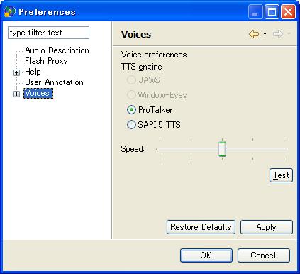
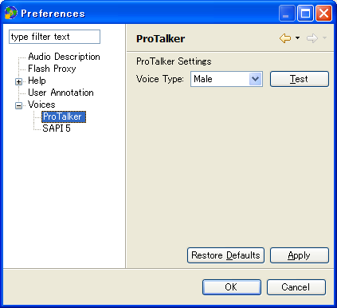
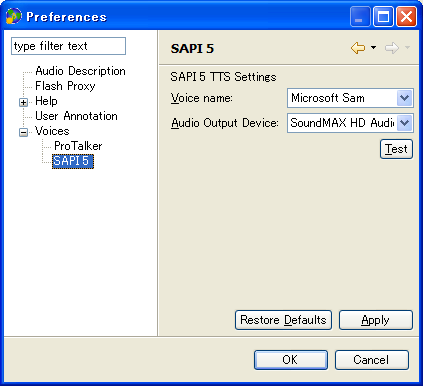
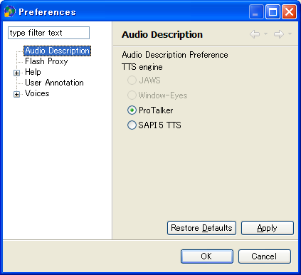
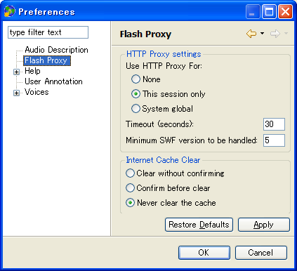
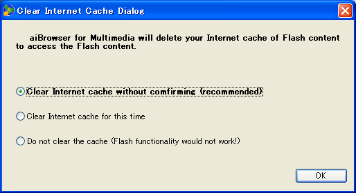
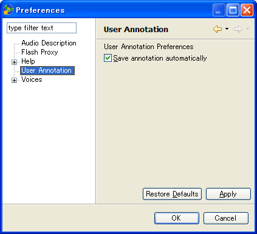

Back to Index
Preferences
To open preferences dialog, select "Preference..." menu in "Window" menu.
Voices
Use this dialog to change the basic voice settings. The basic voice settings include the TTS engine and speed.
Use the TTS settings dialog located in the voice preferences to set the TTS-engine-dependent settings.

- TTS engine
-
Selects a TTS engine for document reading.
- JAWS
- The JAWS option will be available when you use aiBrowser with JAWS.
JAWS should be running before aiBrowser is launched.
- Window-Eyes
- The Window-Eyes option will be available when you use aiBrowser with Window-Eyes.
Window-Eyes should be running before aiBrowser is launched.
- ProTalker
- The ProTalker option will be available when ProTalker OCX (ptocx.exe) is installed in your computer.
Go To ProTalker Settings
- SAPI 5
- Windows® XP includes a default voice, "Microsoft Sam".
Go To SAPI 5 Settings
- Speed
- Controls the speed of the speaking voice. When the slider is moved to the left,
the reading is slower, and when moved to the right, the reading becomes faster.
The range of voice speaking speeds differs for each Text-To-Speech engine.
(This setting does not affect to reading speed of JAWS.
If you want to change reading speed of JAWS,
please type "Control + Alt + PageUp or PageDown".)
- Test
- Reads a test message using the current Speed setting.
Click on the Apply button and then the Test button to test a TTS engine.
ProTalker settings

- Voice type
- Selects a voice gender, male or female.
- Test
- Reads a test message using the current settings.
SAPI5 TTS settings
The aiBrowser supports any Microsoft® SAPI 5 compliant Text-to-Speech engine.
Windows® XP includes a default voice, "Microsoft Sam".
The voice can be changed by installing a different TTS engine.
The preferred audio output device can also be changed to optional audio output devices, such as external USB speakers.

- Voice name
- Selects a named voice.
- Audio Output Device
- Selects an available audio output device.
- Test
- Reads a test message using the current settings.
Audio Description
Use this dialog to change the voice settings for audio description.

- TTS engine
- Selects a TTS engine for the audio description function.
A different voice from that used for document reading can be selected for the audio descriptions.
Flash Proxy
Configure behavior of the proxy.

- Use HTTP Proxy For:
- Configure the HTTP connections mediated by the proxy.
- None: The proxy mediates no HTTP connections.
You cannot access or control Flash content if this option is selected.
- This session only: The proxy mediates connections related to this aiBrowser session.
- System global: The proxy mediates all HTTP connections, even for websites viewed using a browser other than the aiBrowser.
a browser other than the aiBrowser.
- Timeout (second)
- Specify a non-negative integer. This sets the connection timeout when the proxy is used. Default is 30 (seconds).
- Minimum SWF version to be handled
- Specify a non-negative integer. The proxy does not process Flash content if it is older than a version specified here.
Default is 5. Note: Since Flash content older than the version 5 has limited ActionScript functionality,
aiBrowser cannot obtain its internal structure.
- Internet Cache Clear
- The Internet cache must be cleared before viewing webpages to add the controls
for Flash content. However clearing the cache affects browser performance.
These settings control whether or not aiBrowser should clear the cache at startup time.
- Clear without confirming
- If this option is selected, then aiBrowser clears your cache at start-up without any confirmation dialog.
- Confirm before clear
- If this option is selected, then aiBrowser shows a confirmation dialog to ask whether or not to clear the cache.
- Never clear the cache
- If this option is selected, then aiBrowser does not clear cache at start-up. The Internet cache must be explicitly
cleared to use the Flash Proxy view. The following illustrated example is for Internet Explorer 6.
- Select the Tools > Internet Options menu in the Internet Explorer, or select Internet Options from the Control Panel.
- Select the General tab at the top of the dialog box and select Delete Files under Temporary Internet Files.
- A confirmation dialog asks "Delete all files in the Temporary Internet files".
Select OK. The dialog closes.
- Select OK to close the Internet Options dialog.

User Annotation
Use this dialog to change the behavior of the user annotation functions.
- Save annotation automatically
- If this option is selected, annotations are automatically saved
every time when annotations are edited or landmarks are set.
Annotations can be saved manually by typing "Control + Alt + S".

Back to Index